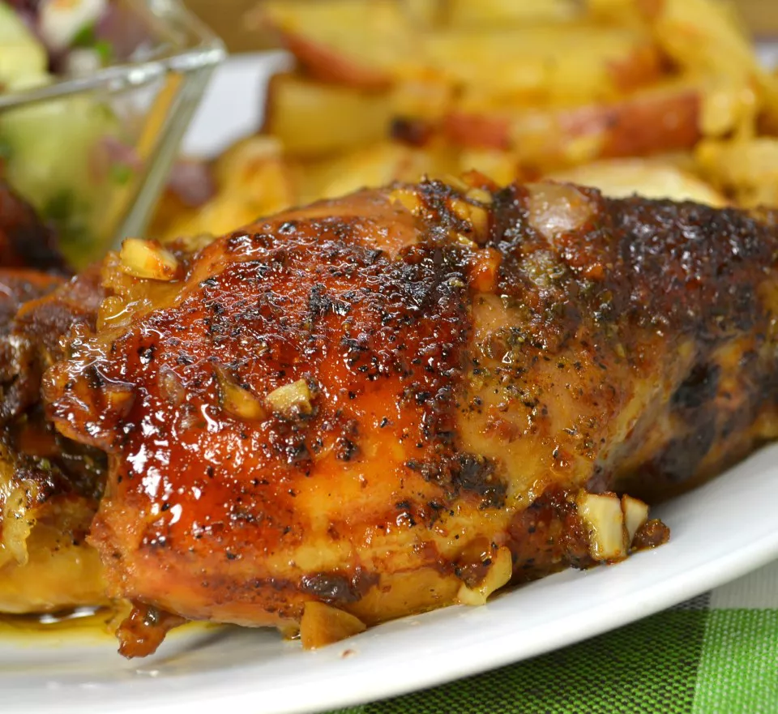

Honey-Garlic Slow Cooker Chicken Thighs

Description and Nutritional Facts
I have used it often. It's easy and uses pantry staples. Always a hit with adults and kids. Serve with basmati rice or quinoa and steamed or roasted vegetables.
Nutritional Facts
325 Calories
12g Fat
34g Carbs
22g Protein
Ingredients
- 4 skinless, boneless chicken thighs
- 1/2 cup soy sauce
- 1/2 cup ketchup
- 1/3 cup honey
- 3 cloves garlic, minced
- 1 teaspoon dried basil
Steps
- Lay chicken thighs into the bottom of a 4-quart slow cooker.
- Whisk soy sauce, ketchup, honey, garlic, and basil together in a bowl; pour over the chicken.
- Cook on Low for 6 hours.